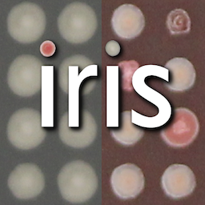

Generally, Iris follows the following steps:
Iris was designed in a modular fashion; in other words, the above worflow steps are separate modules that one can plug in, modify, and replace at will.

To help new/modified modules connect in the same way to the profile class, I use connecting classes, such as TileReaderInput and TileReaderOutput (illustrated as green and pink shapes in the above)
These connecting classes only need to be extended if you add new readouts not already covered by existing connecting subclasses.

Each profile calls different modules (as illustrated above), but different profiles can call on the same modules.
Here is a table listing the algorithms used per profile: